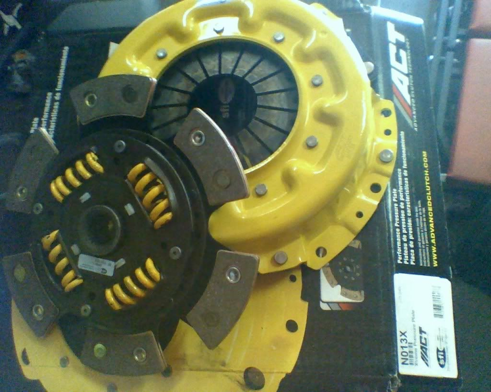
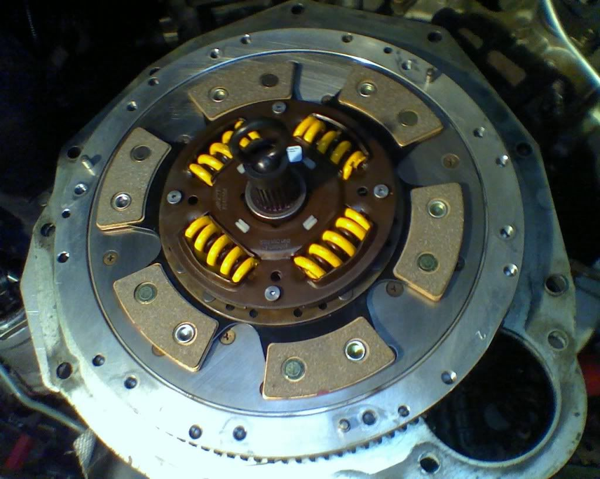

-
I just put a new clutch in finally. I went with an ACT sprung 6 puck with the xtreme pressure plate made for a z32 na. I have put about 20 miles on it so far and i really like it. NOT hard to drive at all despite what everyone has said about them. Pedal effort is not to stiff by any means either. The only time it chatters is during slipping under like 1200rpm. Clutch is very streetable for daily use as long as you get the sprung version.

Bolt on, fast, z31. You can only pick two.
Old weaksauce numbers: 391hp/433tq

-
Re: New clutch
the everyone you refer to are simply sheep repeating what they read.Nearly all men can stand adversity, but if you want to test a mans character make him a moderator. -
Re: New clutch
Just curious, what is the torque rating of that clutch?Black 1986 300zx Turbo coupe (Chuki)
http://z31performance.com/showthread…86-Turbo-Coupe
----------------------------------------------------------------------------------------------------------------
Pewter 1986 300zx N/A 2 Turbo 2+2 (Chuki)
http://z31performance.com/showthread…9;s-1986-300zx -
Re: New clutch
626lbsBolt on, fast, z31. You can only pick two.
Old weaksauce numbers: 391hp/433tq
-
Re: New clutch
I use to run a 6 puck unsprung and it wasn't too bad at all. Pedal was a good bit heavier and caused my old slave cyclinder to fail within 50 miles but a new one held up just fine.Own:
1986 Z31 2+0 Turbo GLL ---- spearco IC ,3" exhaust, Poly everything with solid subframe and diff mounts, HX35/40 Holset Turbo, CLSD, Nistune with 1220cc FIC injectors on E85.
1993 Jeep Cherokee 4X4
Owned:
1995 Z32 2+0 NA Black
1985 Z31 2+0 turbo Black
1986 Z31 2+0 NA Red
1988 Z31 2+2 NA Auto
1988 Z31 2+0 Turbo White ---- Stripped for all of its goodies.
1984 Z31 2+0 turbo Brown
1985 Z31 2+0 NA Black
2003 Nissan frontier D22 supercharded vg33e 4x4 -
Re: New clutch
Looks like the trans has to come back out. Something is wrong with my PP. Everything was perfect for a few days but now it is starting to engage off the floor but doesnt fully lock up until the pedal is almost all the way out. I replaced my master and slave just to rule them out. Oh and it also slips some under full power. :-(Bolt on, fast, z31. You can only pick two.
Old weaksauce numbers: 391hp/433tq
-
Re: New clutch
aceman wrote: the everyone you refer to are simply sheep repeating what they read.85 Z31 6.0 LSX turbo 766whp/792wtq
04 GTO, LS6, big cam, porting, N20… underway for summertime daily driver. -
Re: New clutch
hope it's not the spring(s) in the hub..Matt89 wrote: Looks like the trans has to come back out. Something is wrong with my PP. Everything was perfect for a few days but now it is starting to engage off the floor but doesnt fully lock up until the pedal is almost all the way out. I replaced my master and slave just to rule them out. Oh and it also slips some under full power. :-(Gone - 1988 Shiro
2004 BMW 330Ci
2005 BMW 330i
1991 Twin Turbo Z's (Red and Black)
http://www.E46Turbo330Ci.com -
Re: New clutch UPDATE: PP Problems
The springs in the hub wouldnt have anything to do with the PP movement…although i have heard of them coming out. Its hard to describe but the clutch feels like it is binding somehow and the pedal is alot stiffer since this started.Bolt on, fast, z31. You can only pick two.
Old weaksauce numbers: 391hp/433tq
-
Re: New clutch UPDATE: PP Problems
if a spring pops out (which they can and do) it can bind the operation.Matt89 wrote: The springs in the hub wouldnt have anything to do with the PP movement…although i have heard of them coming out. Its hard to describe but the clutch feels like it is binding somehow and the pedal is alot stiffer since this started.
We have seen it before, no matter what brand of clutch..
if it is not that it must be a drive strap on the side of the clutch.. I had Luis at clutchmaster do a custom set up with 3 drivestraps because of poor return which led to low pedal feel, car lurching forwards with clutch pedal pressed in all the way and about 4500rpm launch. Slipped out of the hole…Gone - 1988 Shiro
2004 BMW 330Ci
2005 BMW 330i
1991 Twin Turbo Z's (Red and Black)
http://www.E46Turbo330Ci.com -
Re: New clutch UPDATE: PP Problems
Here is the aftermath of the one with the spring that popped.Gone - 1988 Shiro
2004 BMW 330Ci
2005 BMW 330i
1991 Twin Turbo Z's (Red and Black)
http://www.E46Turbo330Ci.com -
Re: New clutch UPDATE: PP Problems
That could be very possible..it actually happened doing a 2 step launch on my et streets. It was on the street so they didnt hook up but still could have very likely cause this. :-?Bolt on, fast, z31. You can only pick two.
Old weaksauce numbers: 391hp/433tq
-
Re: New clutch UPDATE: PP Problems
before you remove the tranny, check the clutch master cylinder rod adjustment on the clutch pedal. You loosen the nut and turn the rod in or out to adjust pedal engagement height.Shiro #443

-
Re: New clutch UPDATE: PP Problems
^^I already have. Trans is coming out tomorrow after i get off work.Bolt on, fast, z31. You can only pick two.
Old weaksauce numbers: 391hp/433tq
-
Re: New clutch UPDATE: PP Problems
If it is the pressutre plate, it will be hard to determine whether or not the drive straps are "stretched". But that is usually the most common issue people have. The spring will be obvious.
I guess we will know tomorrow…
If it is the drive straps then when you press the clutch in and rev the car, the car will move forward. On acceleration the clutch will slip.Gone - 1988 Shiro
2004 BMW 330Ci
2005 BMW 330i
1991 Twin Turbo Z's (Red and Black)
http://www.E46Turbo330Ci.com

Copyright © 2006–. All rights reserved. Privacy Policy